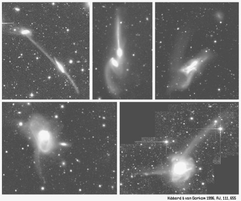
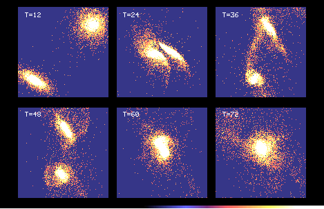
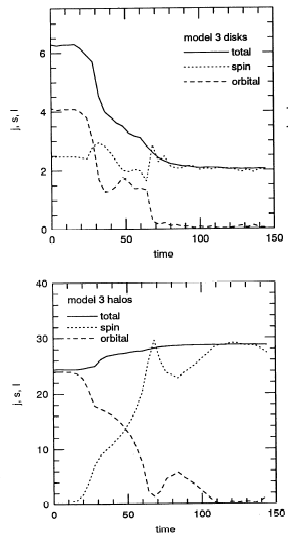

Dynamics of Interacting Galaxies
The evolution of interacting galaxies is governed largely by gravitational
effects. That these interactions can have a profound effect on the
participating galaxies is clear from the observational record.
Morphologically, interacting galaxies are found to sport long bridges and
tails, stellar bars and/or enhanced
spiral structure, and often severely distorted main bodies (see Figure 3).
At first, many astronomers believed the long streamers of stars and
gas seen emanating from some interacting galaxies to be shaped by magnetic
fields or nuclear jets -- the thinness and linearity of these features
made a gravitational origin seem unlikely. However, computer models
of interacting galaxies in the early 1970s by Alar and Juri Toomre showed
convincingly that these streamers were the simple
consequence of gravitational tides acting on rotating disk galaxies, and
these streamers were dubbed "tidal tails."
|  |
( John Hibbard, NRAO) |
To understand the development of tidal tails, recall that tidal forces -- the differential gravitational forces from a nearby mass -- act to stretch an object radially. In this manner, our own Moon raises bulges on the surface of the Earth which give rise to our oceanic tides. Similarly, when two galaxies experience a close encounter, their tidal fields stretch one another radially. This stretching, combined with the galaxies' rotation, causes the stars and gas in the outskirts of each galaxy to ``shear off'' from their parent galaxies. Material on the far side of each disk -- away from the companion galaxy -- is ejected into long, thin tidal tails, while material on the near side is drawn towards the companion. Depending on the encounter geometry, the nearside material may actually form a physical ``bridge'' between the galaxies, along which material may flow from one galaxy to another. Because of the coupled effects of gravitational tides and galactic rotation, the development of tidal features depends strongly on resonances between the rotational and orbital motions of the galaxies. Prograde encounters, in which the galaxies sense of rotation and orbital motion is matched, are most effective at tail-building. The lack of spin-orbit resonances in retrograde encounters, on the other hand, acts to suppress the formation of tidal tails.
The early computer models of Toomre and Toomre demonstrated these basics of building tidal tails, and opened the door to the use of computer simulation to study the evolution of interacting galaxies. Because of the long timescales involved in galaxy interactions -- hundreds of millions or billions of years -- observations of interacting systems show only individual ``snapshots'' of a complex evolutionary process. Piecing together these varying snapshots into a coherent sequence is a task made difficult by the unknown initial conditions of the different interactions. However, computer simulations can be used to study a wide variety of well-defined galaxy interactions, and by studying the evolution of these models the observational snapshots can be more easily placed into a evolutionary context.
Computer simulations employ a Lagrangian technique known as N-body modeling, wherein galaxies are represented by N discrete particles whose initial positions and velocities sample the phase space distribution of normal disk galaxy. Current simulations employ 106 -- 107 particles, so that each particle represents 104 -- 105 stars (simulating galaxies star by star is still well beyond current computational abilities). The N-body model is then advanced forward in discrete time steps by calculating the net gravitational acceleration acting on each particle from the other particles, then advancing each particle forward in time given its position, velocity, and acceleration (for gas, hydrodynamic forces must also be considered; these are discussed in a later section).
One example of such a computer model of colliding galaxies is shown in
Figure 4. In this model, two equal mass spiral galaxies are placed on an
initially parabolic orbit with a closest approach of 2.5h, where h is
the exponential scale length of the disk stars. One disk is perfectly prograde
while the second is inclined by 71o to the orbital plane. As the
galaxies first collide, the tidal forces act to distort each disk, launching
the tidal tails. Moving at parabolic velocity, the galaxies quickly pass one
another and move apart, reaching maximum separation at T~40 (unit time
is roughly 10 million years). After this point, the galaxies reverse their
motions and fall back on one another, merging together to form a ellipsoidal
merger remnant around T~60.
|  |
| Figure 4:
Computer model of colliding galaxies. The total time covered by the model is
approximately 750 million years. |
After first passage, in addition to forming the extended tidal tails, the galaxies themselves develop a strong internal response to the interaction. The passage of a companion seeds a m = 2 gravitational perturbation in the disk of each galaxy; these perturbations can then be amplified into strong spiral arms or even dramatic central bars by the self-gravity of the disk. The detailed response of the galaxies depends crucially on their internal structure: if the stellar disk dominates the mass distribution in the inner portion of the galaxy, the disk self-gravity can easily amplify the perturbation into a strong bar. On the other hand, if the galaxy is bulge- or dark matter-dominated in its interior, the disk is more stable against growing m = 2 bar modes, and spiral structure is the more likely outcome.
What causes the rapid merging of the two galaxies? Certainly there is a transfer of orbital energy to internal motions of the stars in each galaxy -- it is this energy transfer that provides the energy necessary to launch the tidal tails. The amount of energy carried away by the tidal tails amounts to only a few percent of the total orbital energy, however; if this was the sole energy sink, interacting galaxies would slowly spiral together over many orbital periods, rather than the rapid merging seen in Figure 4. Indeed, early investigations into the collisions of galaxies argued that subsequent mergers would be quite rare, unless the collision happened to be extremely penetrating.
| In fact the luminous portions of galaxies represent only a small fraction of the total galactic mass -- galaxies are embedded in massive, extended ``dark matter halos.'' These dark matter halos extend to many tens or even hundreds of kiloparsecs, such that encounters where the luminous galaxies seem to pass by one another may in fact be penetrating encounters for the dark halos. When this happens, dynamical friction ensures rapid orbital decay. As the galaxies pass through each others dark halos, they set up a trailing wake in the halo mass distributions, creating a gravitational drag on the galaxies' relative motion. As a result, energy and angular momentum are transferred from the binary orbit to the internal motions of the dark halo -- the orbit decays and the halos are spun up. It is this ability for dark matter halos to absorb orbital energy and angular momentum that makes galaxy mergers possible; without halos, mergers would be rare indeed. |  |
| Figure 5:
Evolution of the angular momentum content in colliding galaxies. Notice how
the spin angular momentum of the dark halo increases as the orbital angular
momentum of the disk+halos decreases.
(From Hernquist 1992) |
 |
 |